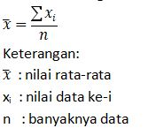
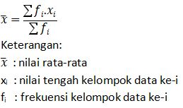

Aulya
DEFINITION
1. MEAN/Rata-Rata
Mean dapat diartikan sebagai nilai rata-rata suatu kelompok data.
Rumus Mean

Rumus Mean Data Kelompok

1. MEAN/Rata-Rata
Median adalah nilai tengah data setelah diurutkan.
Rumus Median
Data Ganjil
Med = xn/2
Data Genap

Rumus Median Data Kelompok
Med = tb + ((n/2) – Fkum)/fi) k
1. MEAN/Rata-Rata
Modus merupakan nilai yang sering muncul dalam suatu kelompok data.
Rumus Modus Data Kelompok
Mo = tb + (d1 / (d1 + d2)) k